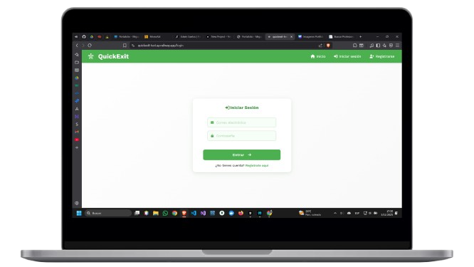
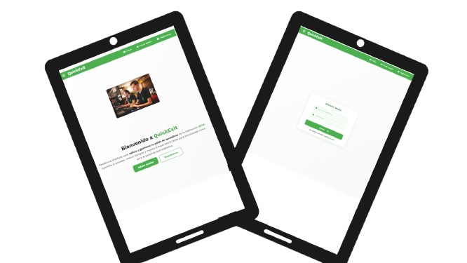
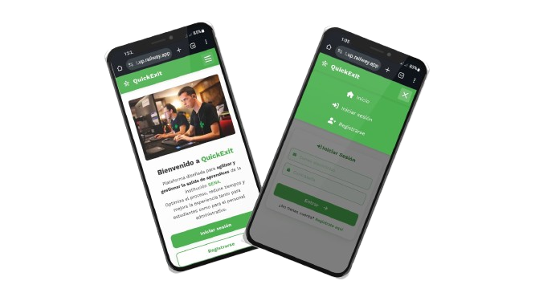
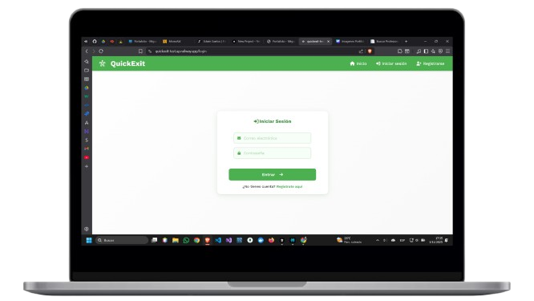
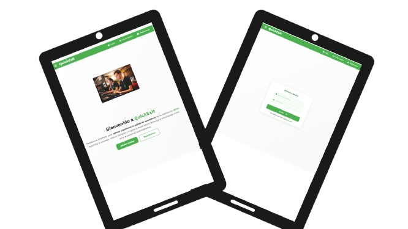
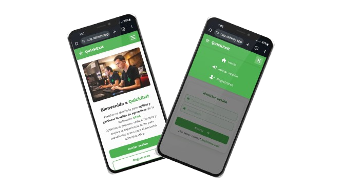
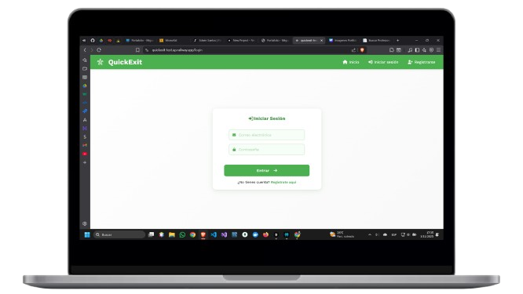
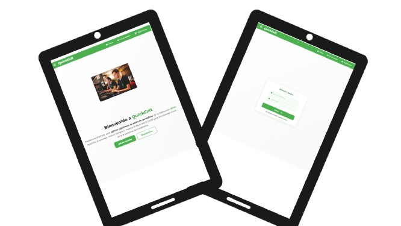
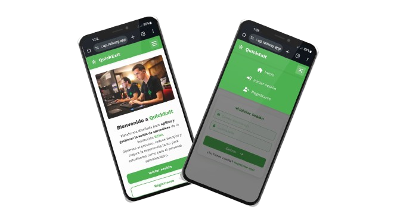

Actualmente me encuentro cursando la formacion de Análisis y Desarrollo de Software. En la institucion del SENA. Me apasiona el desarrollo de software, la solucion de problemas y ver como mis desarrollos pueden ayudar a los demas. Me encuentro en mi etapa de preparación para ser desarrollador de software.
"Siempre avanzando al ritmo que la tecnologia."



Es una plataforma diseñada para facilitar la conexión entre profesionales y sus clientes con transferencias propias entre ellos
SENA - 2024-2026 - Presente
En desarrollo ONE-Oracle Next Education – Alura latam 2025 - 2026
Corporación Unificada Nacional de Educación Superior CUN 2025